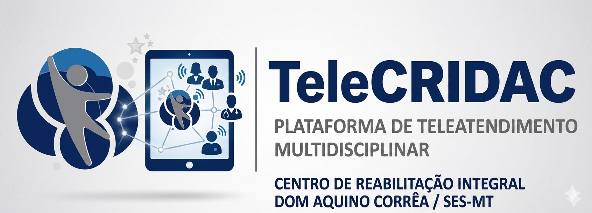

💡 Dica de Uso: Esta página reúne todos os slides em formato linear de rolagem para facilitar a leitura e exibição no GitHub Pages. Para alterar os fluxogramas ou textos da arquitetura de dados, modifique as classes HTML de forma declarativa.

Plataforma de Teleatendimento Multidisciplinar CRIDAC/SES-MT
Desenvolvido por: Joelma Silva Campos Godoy
Secretaria Estadual de Saúde de Mato Grosso (SES/MT) / CRIDAC
O TeleCRIDAC é uma plataforma de telessaúde customizada para o Centro de Reabilitação Dom Aquino Corrêa (CRIDAC). O projeto visa viabilizar o atendimento remoto multidisciplinar de forma resiliente, segura e gratuita.
A arquitetura esconde uma complexidade altamente robusta no back-end para garantir integridade jurídica e clínica aos dados de saúde, mantendo uma interface de extrema simplicidade no front-end para o uso do cidadão.
Como o sistema operacionaliza de forma automatizada e sequencial as etapas fundamentais do cuidado remoto de saúde:
Integração com a base de regulação. Disparo de link único via SMS/WhatsApp pelo Make.com 15 min antes.
Paciente acessa a sala de espera. O sistema realiza o teste automático de câmera, microfone e latência de rede.
Conexão em tempo real via WebRTC. Painel dividido: Chamada de vídeo + preenchimento clínico do IFBrM.
Registro automático da duração total no Supabase, geração de log para faturamento SUS e pesquisa automatizada.
Em conformidade com a tática do "Aparentemente Simples", a jornada do paciente com deficiência prioriza a acessibilidade cognitiva e motora extrema:
O paciente recebe a mensagem com o link tokenizado diretamente no WhatsApp, eliminando atritos de login.
Interface limpa com indicadores visuais de que o microfone e áudio estão prontos e funcionando.
Metade da tela exibe o vídeo estável do Jitsi Meet; a outra metade exibe o formulário dinâmico integrado ao banco.
Consulta em tempo real de logs e tabelas anteriores de funcionalidade e evolução clínica do paciente.
O foco no desenvolvimento back-end permite que profissionais de Fisioterapia, Fonoaudiologia e Psicologia tenham uma estação de teletrabalho unificada:
Índice de Funcionalidade Brasileiro Modificado
Trata-se do instrumento oficial brasileiro respaldado pela **CIF (Classificação Internacional de Funcionalidade, Incapacidade e Saúde)**. Sua implementação digital no TeleCRIDAC divide a avaliação em uma matriz diagnóstica estruturada de dependência:
O paciente realiza a atividade sem qualquer barreira ou necessidade de adaptação de terceiros.
Realiza a tarefa de forma autônoma, porém requer auxílio de modificações ambientais ou próteses.
Demanda a presença ativa e a assistência de cuidadores para a execução parcial da tarefa diária.
Incapacidade severa de execução autônoma, sendo totalmente dependente de terceiros.
Toda teleconsulta deixa de ser um evento efêmero e é convertida em ativos de informação digital interoperáveis para a Coordenação de Gestão Ambulatorial (CGA):
| Artefato / Documento | Formato de Saída | Destino Administrativo | Métricas Extraídas |
|---|---|---|---|
| Logs de Latência e Conexão | JSON estruturado | Supabase DB / Auditoria | Sucesso de chamadas, perda de pacotes WebRTC e quedas de link. |
| Faturamento de Produção | CSV Interoperável | Integração Ambulatorial SUS | Código de procedimento por especialidade e tempo de atendimento regulamentado. |
| Laudo de Funcionalidade (IFBrM) | Registro Criptografado | Prontuário e Looker Studio | Geolocalização das demandas |